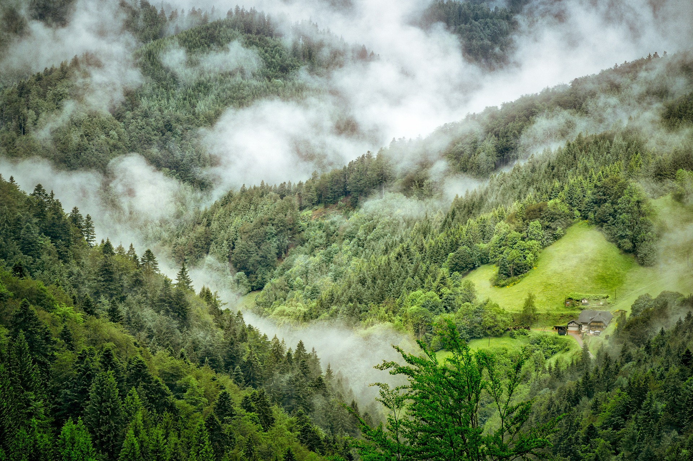
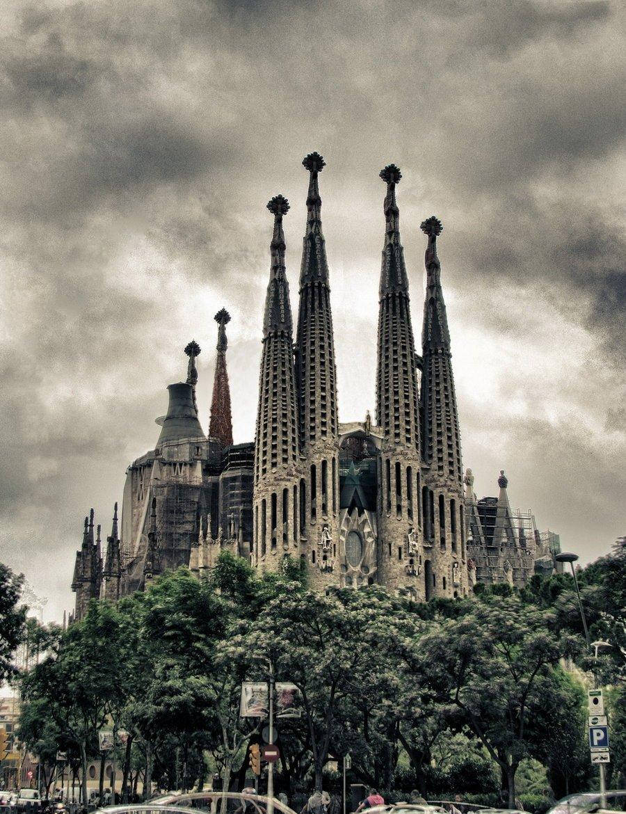

See the following Top Five best places across Europe Continent

Effeil Tower
Location: Paris.
Best Time to Visit: April-June or September-November.
Info:An iconic landmark offering stunning views of Paris and a symbol of French culture.

Block Forest
Location: Southwestern Germany, Baden-Württemberg.
Best Time to Visit: May-October (hiking) or December-February (winter activities).
Info:A dense forest region famous for its scenic trails, cuckoo clocks, spa towns like Baden-Baden, and picturesque villages.

Sagrada Familia
Location: Barcelona.
Best Time to Visit: May-June or September-October.
Info:An extraordinary basilica designed by Antoni Gaudí, blending Gothic and Art Nouveau styles.

Venice Grand Canal
Location: Venice.
Best Time to Visit: April-June or September-October.
Info:A romantic destination known for its gondola rides and beautiful waterways.

Big Ben Houses Of Parliament London
Location: London.
Best Time to Visit: April-June or September-October.
Info:Iconic landmarks representing British governance and history.